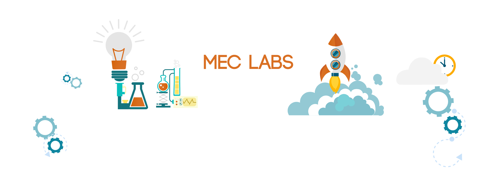
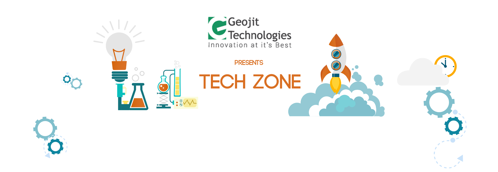

<link rel="import" href="../bower_components/polymer/polymer.html">

<dom-module id="xl-exhibitions">
<style>
	.container {
      	margin: auto;
      	width: 100%;
      	max-width: 980px;
      	background-color: white;
      }

      .bkg-img {
      	width: 100%;
      }

      .content {
            color: rgba(0,0,0,0.65);
      	width: 65%;
      	margin: auto;
      	text-align: center;
      	font-size: 18px;
      	padding: 16px;
      	box-sizing: border-box;
      	transform: translateY(-116px);
      	box-shadow: 0 1px 3px 1px rgba(0,0,0,0.15);
      }

      @media( max-width: 600px) {
      	.content {
      		transform: none;
      		width: 100%;
      		text-align: none;
          box-shadow: none;
      	}
      }

      h1 {
        text-align: center;
        font-weight: 400;
        font-size: 34px;
        color: rgba(0,0,0,0.65);      	
      }

      @media(min-width: 980px) {
      	h1 {
      		font-size: 56px;
      	}
      }

</style>

<template>

	<h1>Exhibitions</h1>
	<div class="container">

		

		<p class="content">Engineering isn’t exclusively limited to listening to lectures and jotting down notes. Get ready to dirty your hands and build projects with assistance from knowledgeable mentors. Effectuate your ideas into reality and get the platform to exhibit your project. An event exclusively for second year MECians.</p>

		

		<p class="content">With such enormous events going about, it’s easy to feel overwhelmed. Tech zone offers some relief with small technical games, short treasure hunts etc and can act as a much needed appetizer or dessert.</p>


	</div>
</template>

<script>
	Polymer({
		is: 'xl-exhibitions'
	});
</script>

</dom-module>